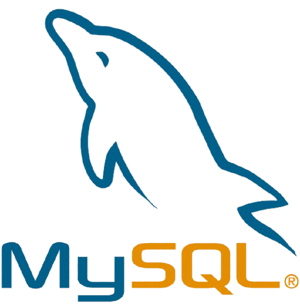
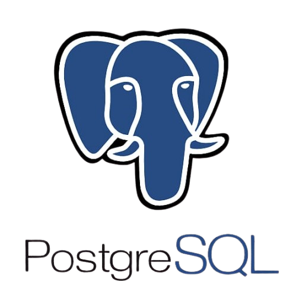
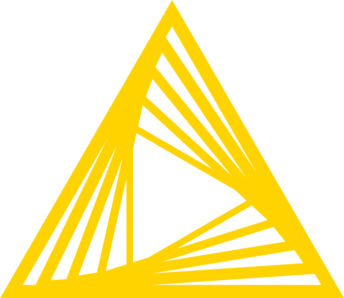

ERIC.SOUTO
Analista de Dados & Business Intelligence
Eric Souto
Atuo na transformação de dados brutos em informações estratégicas, com foco em melhoria de processos, automação de rotinas e construção de pipelines de dados eficientes.
5+
Projetos
94%
Acurácia
2+
Anos Exp.

Especialista em Insights
Orientados por Dados
Sou Analista de Dados Júnior com foco em estruturação, tratamento e análise de grandes volumes de dados. Desenvolvo pipelines de extração e transformação (ETL), integrando APIs, bancos relacionais e arquivos massivos como CSV e Parquet.
Tenho experiência prática com automação de processos utilizando Python, SQL e KNIME, otimizando fluxos de dados para melhorar performance, reduzir retrabalho e aumentar confiabilidade das informações. Meu objetivo é evoluir constantemente em engenharia e análise de dados, construindo soluções escaláveis.
Pipelines de Dados
Construção de fluxos ETL com Python, SQL e KNIME para extração, transformação e carga de dados.
Automação de Processos
Automação de rotinas analíticas visando ganho de performance e redução de falhas manuais.
Manipulação de Grandes Volumes
Processamento de milhões de registros utilizando Python e técnicas de otimização de consultas.
Visualização
Dashboards e indicadores estratégicos no Power BI para suporte à tomada de decisão.
Stack Tecnológica



